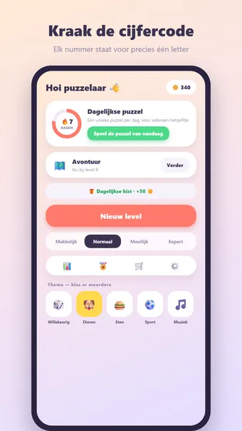
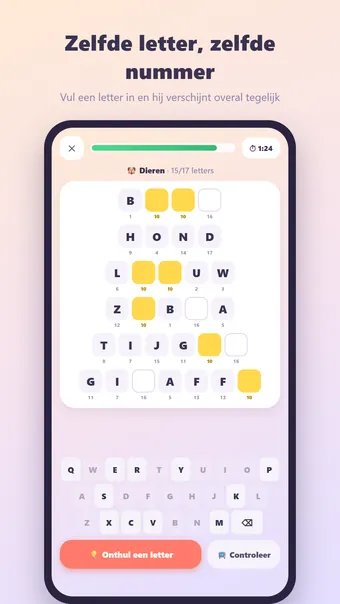
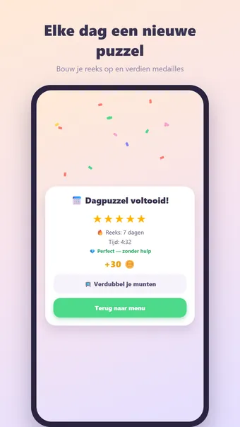
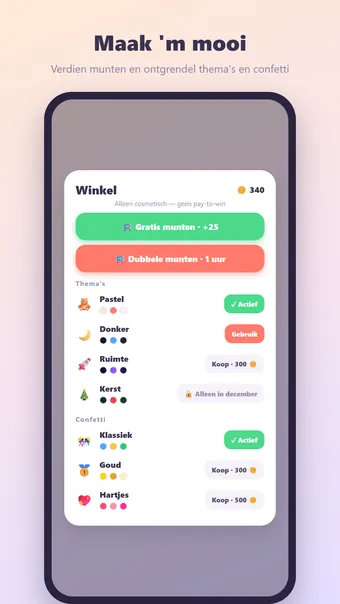

Over Cryptogram
Speel Cryptogram, de slimme cijfercode-puzzel — altijd en overal, gewoon offline. Elk nummer staat voor precies één letter: ontcijfer ze allemaal!
Zo speel je
Elke puzzel wordt vers gegenereerd: zes tot tien woorden rond één thema, geschreven in cijfercode. Zelfde letter = zelfde nummer, overal in de puzzel. Een paar letters krijg je bij de start cadeau. Tik een vakje aan, kies een letter op de letterbalk en hij wordt meteen op élk vakje met dat nummer ingevuld. Al gebruikte letters worden grijs — puur logisch redeneren dus.
Vier moeilijkheidsgraden
- Makkelijk: 6 korte woorden en 2 gegeven letters
- Normaal: 7 woorden en 2 gegeven letters
- Moeilijk: 8 woorden en 1 gegeven letter
- Expert: 10 woorden en 1 gegeven letter — voor de echte codekraker
Avontuur-modus
Reis door themawerelden van tien levels, van makkelijk naar Expert. Ontgrendel ze één voor één, verdien op elk level een medaille van 1 tot 5 sterren en pak bonusmunten bij de mijlpalen op level 10, 25, 50 en 100.
Thema's
Dieren, eten, sport, auto's, landen, films, muziek, bier, bloemen, games, beroepen, vissen en reizen. Alle woorden in een puzzel horen bij hetzelfde thema — dat helpt je op weg.
Dagelijkse puzzel
Elke dag één unieke puzzel, voor iedereen hetzelfde. Verdien een medaille van 1 tot 5 sterren en bouw een reeks op: 3, 7, 30 of zelfs 100 dagen op rij!
Hulp als je vastzit
Onthul een letter of laat je invulling controleren — foute letters worden rood gemarkeerd. Zo blijft ook een Expert-puzzel altijd oplosbaar.
Munten en thema's
Verdien munten met elk voltooid level en geef ze uit aan nieuwe uiterlijken: Bos, Ruimte, Neon, Hout, Marmer en de seizoensthema's Lente, Zomer, Kerst en Halloween — plus confettistijlen voor je overwinning. Alleen cosmetisch — geen pay-to-win.
En verder
- 23 prestaties, van je eerste level tot honderd dagen op rij
- Uitgebreide statistieken: snelste tijd, perfecte levels en meer
- Zen-modus: zet de timer uit en puzzel ontspannen
- Geluid en trilfeedback (uit te zetten in de instellingen)
- Beschikbaar in het Nederlands, Engels, Spaans, Duits, Frans en Portugees — de taal bepaalt ook de woordenlijsten
Gratis te spelen. De app toont advertenties, die je met één optionele aankoop kunt verwijderen; een account is niet nodig.
Veelgestelde vragen
Is Cryptogram gratis?
Ja. Cryptogram is gratis te downloaden en te spelen. De app toont advertenties, die je met één optionele aankoop in de app kunt verwijderen.
Werkt Cryptogram offline?
Ja. Cryptogram werkt zonder internetverbinding, dus je speelt ook in het vliegtuig, in de trein of overal zonder wifi.
Heb ik een account nodig om Cryptogram te spelen?
Nee. Je hoeft je niet te registreren of in te loggen: open de app en speel. Je spellen en instellingen blijven op je eigen toestel.
Hoe speel je Cryptogram?
Elke puzzel wordt vers gegenereerd: zes tot tien woorden rond één thema, geschreven in cijfercode. Zelfde letter = zelfde nummer, overal in de puzzel. Een paar letters krijg je bij de start cadeau. Tik een vakje aan, kies een letter op de letterbalk en hij wordt meteen op élk vakje met dat nummer ingevuld. Al gebruikte letters worden grijs — puur logisch redeneren dus.
Is er elke dag een nieuwe uitdaging?
Elke dag één unieke puzzel, voor iedereen hetzelfde. Verdien een medaille van 1 tot 5 sterren en bouw een reeks op: 3, 7, 30 of zelfs 100 dagen op rij!
Wanneer komt Cryptogram uit?
Cryptogram komt binnenkort naar Google Play, voor Android-telefoons en -tablets. Zodra het spel uit is, staat de downloadknop op deze pagina.
Meer spellen die je leuk vindt
Kruiswoord
Het klassieke kruiswoordraadsel. Oneindig veel puzzels, elke dag een nieuwe.
Google PlayWoordzoeker
De klassieke woordzoeker. Oneindig veel puzzels, elke dag een nieuwe uitdaging.
Google PlayWord Connect
Verbind letters tot woorden. Eindeloos puzzelen en elke dag een nieuwe puzzel.
Google PlayJuridisch
Hieronder vind je de juridische documenten die voor Cryptogram gelden.
Contact
Vragen, feedback of een privacyverzoek? Mail naar joostmuijsenberg.dev@gmail.com.